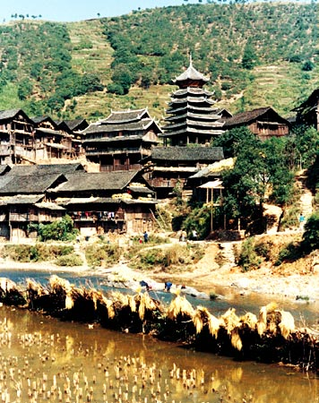

苗族的建筑在各地也有很大差别。黔东南居民住木制平房和楼房。楼房一般为两层，建筑形式多为“吊脚楼”(即按山坡斜度竖桩，在桩上建筑)，屋顶为双斜面。顶棚上层贮藏粮食、杂物，吊脚楼下堆放杂物或圈养牲畜。湘西和贵州松桃等地，采用木质结构、双斜面瓦顶或草顶平房，每幢3～5间，“偏厦”作灶房或牲口圈。过去，地主或富裕人家还筑有庭院，并砌高墙或石碉围护。云南文山地区苗族居民住宅的墙壁多用竹条编织、外面糊上泥土的方法建造，屋顶为平形草顶。昭通地区的苗族居民多住“权权房”，即一种用几根树干交叉搭糊，盖上茅草，用树枝或竹子编织、糊泥作墙的房屋。一般隔为两间，人畜各一。海南岛苗族住的是长而窄的茅草房，三间一幢，屋檐较长，檐下走廊是休息的地方。川南和黔西北的苗族多住士墙草顶或瓦顶的房屋。